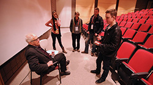

Sundance Film Festival High School Student Programs
Local Student Outreach
Utah High School Screening Series
Since 2000, Sundance Institute offers Utah students and teachers the opportunity to participate in one of the world's top film festivals through the High School Screening Program.
|  |
The Sundance Institute | George S. and Dolores Doré Eccles Foundation High School Screenings Program presents 2014 Sundance Film Festival films specially chosen by Institute staff to introduce students to the art of independent film and engage them in stories from around the globe. Rigorous attention is given to ensure films contain content appropriate for this age group. Through the generous support of Park City Foundation; Park City Municipal Corporation; Park City Rotary; Salt Lake Arts Council; Salt Lake County Economic Development Department; Salt Lake County Zoo, Arts & Parks Program; Summit County Recreation Arts and Parks Program; Utah Arts Council and the National Endowment for the Arts the Program is free to students and teachers.
The Program offers a selection of both international and domestic documentary and narrative films. After each screening, the filmmaker conducts a question & answer session with the students. Utah students have been among the first to view films such as: An Inconvenient Truth, March of the Penguins, The D Word: Understanding Dyslexia, Napoleon Dynamite, and Buck.
Since Festival films are not yet rated, we encourage audiences concerned about film content to consider films selected for the High School Screening Program. The 2014 Program includes:
Cesar’s Last Fast / U.S.A. (Director: Richard Ray Perez) Inspired by Catholic social teaching, Cesar Chavez risked his life fighting for America’s poorest workers. The film illuminates the intensity of one man’s devotion and personal sacrifice, describes the birth of an economic-justice movement, and tells an untold chapter in the story of civil rights in America.
Dinosaur 13 / U.S.A. (Director: Todd Miller) - The true tale behind one of the greatest discoveries in history.
Fed Up / U.S.A. (Director: Stephanie Soechtig) - Fed Up blows the lid off everything we thought we knew about food and weight loss, revealing a 30-year campaign by the food industry, aided by the U.S. government, to mislead and confuse the American public, resulting in one of the largest health epidemics in history.
Freedom Summer / U.S.A. (Director and screenwriter: Stanley Nelson) - In the summer of 1964, more than 700 students descended on violent, segregated Mississippi. Defying authorities, they registered voters, created freedom schools, and established the Mississippi Freedom Democratic Party. Not all of them would make it through. Fifty years later, eyewitness accounts and never-before-seen archival material tell their story.
Kumiko, the Treasure Hunter / U.S.A. (Director: David Zellner, Screenwriter: David Zellner, Nathan Zellner) - A lonely Japanese woman becomes convinced that a satchel of money buried in a fictional film is, in fact, real. Abandoning her structured life in Tokyo for the frozen Minnesota wilderness, she embarks on an impulsive quest to search for her lost mythical fortune. Cast: Rinko Kikuchi.
Last Days in Vietnam / U.S.A. (Director: Rory Kennedy, Screenwriter: Mark Bailey, Keven McAlester) - During the chaotic final weeks of the Vietnam War, the North Vietnamese Army closes in on Saigon as the panicked South Vietnamese people desperately attempt to escape. On the ground, American soldiers and diplomats confront a moral quandary: whether to obey White House orders to evacuate only U.S. citizens.
Ping Pong Summer / U.S.A. (Director and screenwriter: Michael Tully) - 1985. Ocean City, Maryland. Summer vacation. Rap music. Parachute pants. Ping pong. First crushes. Best friends. Mean bullies. Weird mentors. That awkward, momentous time in your life when you're treated like an alien by everyone around you, even though you know deep down you're as funky fresh as it gets. Cast: Susan Sarandon, John Hannah, Lea Thompson, Amy Sedaris, Robert Longstreet, Marcello Conte.
SEPIDEH—Reaching for the Stars / Denmark, Iran, Germany, Norway and Sweden (Director: Berit Madsen) - Sepideh wants to become an astronaut. As a young Iranian woman, she knows it’s dangerous to challenge traditions and expectations. Still, Sepideh holds on to her dream. She knows a tough battle is ahead, a battle that only seems possible to win once she seeks help from an unexpected someone.
The Green Prince / Germany/Israel/United Kingdom (Director: Nadav Schirman) - This real life thriller tells the story of one of Israel’s prized intelligence sources, recruited to spy on his own people for over a decade. Focusing on the complex relationship with his handler, this is a gripping account of terror, betrayal, unthinkable choices - and a friendship that defies all boundaries.
The Internet's Own Boy: The Story of Aaron Swartz / U.S.A. (Director and screenwriter: Brian Knappenberger) - Programming prodigy and information activist Aaron Swartz achieved groundbreaking work in social justice and political organizing. His passion for open access ensnared him in a legal nightmare that ended with the taking of his own life at the age of 26.
Web Junkie / Israel/U.S.A. (Director: Shosh Shlam, Hilla Medalia) - China is the first country to label Internet addiction a clinical disorder. Web Junkie investigates a Beijing rehab center where Chinese teenagers are deprogrammed.
Zip & Zap and the Marble Gang / Spain (Director: Óskar Santos, Screenwriter: Francisco Roncal, Jorge Lara, Óskar Santos) - Zip and Zap are punished by being sent to a re-education center. Guided by intelligence, they uncover a mysterious secret hidden deep within the school and end up having the most exciting adventure of their lives. Cast: Javier Gutiérrez, Daniel Cerezo, Raúl Rivas, Claudia Vega, Marcos Ruiz, Fran García.